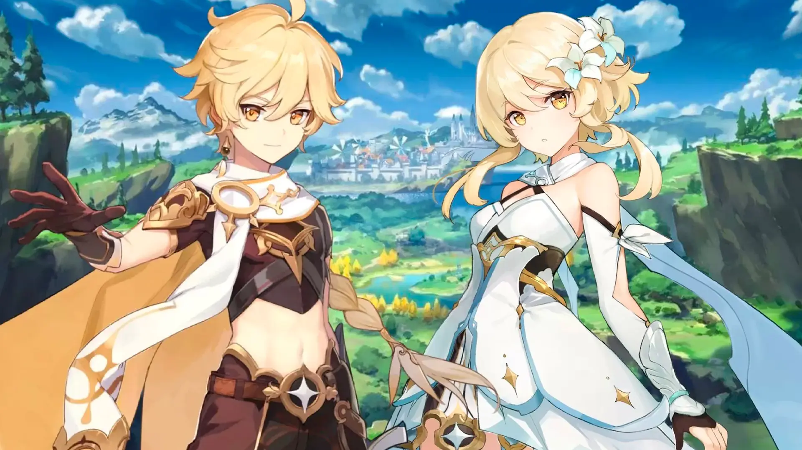

Genshin Impact adalah sebuah game Open World RPG buatan Mihoyo atau Hoyoverse yang rilis pada tahun 28 September 2020. Di Genshin Impact, pemain akan menjelajahi dunia fantasi yang dikenal dengan nama Teyvat. Dalam dunia yang luas ini, pemain akan perlahan bisa melintasi tujuh bangsa yaitu, Monstand, Liyue, Inazuma, Sumeru, Fontaine, Natlan dan Sneznaya. Awal di game ini dibuka dengan kisah kakak beradik yang hendak ingin berkelana, tetapi dicegat oleh Unknown God dan saat itulah pemain diminta untuk mengambil siapa yang akan menjadi karakter utama sepanjang game, tersedia dua gender yaitu kakak laki-laki, Aether dan adik perempuan, Lumine. Setelah memilih karakter utama untuk dimaikan, petualangan akan dimulai sebagai seorang Pengembara atau Traveler. Awal cerita tokoh utama akan bertemu dengan Paimon yang bertugas sebagai pemandu dan pendamping kita di dunia Teyvat. Pertemuan pertama tokoh utama dengan Paimon cukup lucu, di mana tokoh utama menyelamatkan Paimon yang entah mengapa tenggelam secara tidak sengaja tersangkut saat tokoh utama sedang memancing ikan di laut. Kemudian dari pertemuan tersebutlah permainan genshin impact bisa dijalankan mandiri oleh pemain. Seperti game lainnya, awal akan diberikan tutorial memainkannya, mulai dari berjalan, berlari, normal attack, skill attack hingga ultimate akan diberitahukan caranya.

Aether dan Lumine
Opening Ver.Aether
Opening Ver.Lumine
Genshin Impact menyediakan gameplay open world yang di mana para player bisa menggerakan karakter ke mana saja tanpa batas. Menjelajahi tempat=tempat yang sudah disediakan, para player akan diwajibkan menyelesaikan puzzle atau tantangan entah itu pertarungan dalam batas waktu atau meraih tempat tertentu dengan batas waktu. Setelah menyelesaikan puzzle atau tantangan, player akan diberikan hadiah seperti bahan upgrade karakter, senjata dan yang paling diminati seluruh player adalah Primogem. Primogem adalah benda yang digunakan untuk mendapatkan hal spesial di dalam game, seperti senjata dan karakter. Karakter yang bisa dimainkan di game ini ada banyak sekali dan dibagi dalam dua tipe yaitu bintang 5 dan bintang 4. Hal tersebut mempengaruhi kekuatan dari karakter yang dipilih. Semua karakter memiliki gaya pertarungan dan elemen yang berbeda, hal tersebut yang akan memengaruhi kekuatan damage yang akan dihasilkan berdasarkan kelemahan yang dimiliki musuh. Tidak lupa game ini juga menyediakan pilihan untuk menentukan nama sendiri. Untuk sampai update terbaru versi 5.1 kali ini masih berada di bangsa perang, Natlan.
Trailer Genshin Impact
Sistem Gacha Genshin Impact
Sistem gacha untuk para pemain game lain mungkin sudah terasa familiar, tetapi untuk yang baru memainkan sebuah game cukup asing. Seperti kata gacha, adalah mekanisme dalam permainan (game) yang memungkinkan pemain mendapatkan item, karakter, atau konten lainnya secara acak, mirip seperti sistem lotere atau undian. Nama "gacha" berasal dari "Gashapon" atau "Gachapon", yang merupakan mesin mainan kapsul di Jepang. Cara kerja yaitu player akan menggunakan mata uang dalam game Primogem yang bisa didapatkan di dalam game atau membeli dengan uang asli yang di convert ke dalam Genesis yang kemudian ditukarkan lagi ke primogem. Di Genshin Impact terdapat banner gacha yang terus diperbarui dalam 20 hari sekali.
Berikut beberapa elemen utama sistem gacha Genshin Impact:
Jenis Banner (Sistem Wish):
Character Event Wish {Banner untuk karakter 5★ terbaru/rerun}
Weapon Event Wish {Banner untuk senjata 5★ terbatas}
Standard Wish "Wanderlust Invocation" {Banner permanen}
Beginner's Wish Khusus pemain baru (hanya 20 pull)
Mata Uang Gacha:
Primogems, Mata uang utama yang dapat digunakan untuk melakukan pull di semua banner dan yang bisa dikonversi (160 primogem = 1 Fate/pull).
Fates (Intertwined & Acquaint) Item yang ditukarkan dengan Primogems atau mata uang lainnya untuk melakukan pull
Intertwined Fate Untuk bagian Limited Character dan Weapon Event Wish
Acquaint Fate Untuk Standard dan Beginner's Wish
Rate/Peluang:
5★: 0.6% base rate
4★: 5.1% base rate
3★: 94.3% (senjata)
Sistem Pity (Jaminan) Karakter:
Soft pity mulai di pull ke-74 (peluang meningkat)
Hard pity di pull ke-90 (dijamin 5★)
Jika dapat 5★ non-featured, berikutnya dijamin karakter banner (50/50 system)
4★ dijamin setiap 10 pull
Pity Jaminan Weapon Banner:
Soft pity mulai pull ke-63
Hard pity di pull ke-80
Sistem Epitomized Path: Bisa memilih senjata yang diinginkan setelah sekali gagal
Sistem Akumulasi:
Pity akan terbawa ke banner sejenis berikutnya
History wish tersimpan selama 6 bulan
Starglitter dan Stardust dari duplicate pulls bisa ditukar dengan Fate atau item lain
Monstadt
Mondstadt adalah salah satu dari tujuh wilayah Teyvat, dan yang pertama di mana Traveler mulai mencari saudara mereka yang hilang. Ini adalah bangsa yang setia mengikuti Barbatos, Archon Anemo sebagai Dewa Kebebasan. Di bangsa ini yang menjadi pelindung resmi adalah, Knights of Favonius. Event yang sering dirayakan adalah Windblume Festival, Ludi Harpastum, dan Weinlesefest. Di Monstadt adalah titik awal di mana cerita di mulai, dari traveler yang datang ke kota Monstadt untuk bersinggah dan orang yang pertama ditemui adalah Amber yang mengajak kita berjalan-jalan dan mengajari cara memakai sayap untuk dapat bisa berkendara di udara. Kemudian tidak lama setelah itu, masalah muncul di mana Dvalin atau naga kuno yang biasa bertugas melindungi wilayah Monstadt tiba-tiba menyerang. Traveler dengan sigap langsung menahan perlawanan naga Dvalin dengan bantuan seseorang yang mengendalikan angin. Tidak lama menahan serangan Dvalin, naga itu pun kabur dan membuat keadaan kota kembali aman. Traveler mendarat dengan sempurna setelah menahan serangan Dvaln dan kemudian suara tepuk tangan terdengar dari seorang Kesatria Favonius, Kaeya. Kaeya berterima kasih atas bantuan traveler dan kemudian mengatakan selamat datang, apakah kedatanganmu ini akan menghasilkan keberuntungan atau bencana. Sebagai bentuk apresiasi terhadap kontribusi traveler, ia di ajak ke kantor knight of favonius menemui Grand Master Jean. Tidak lupa diruangan tersebut juga ada pustakwan Lisa. Dari titik ini traveler mendapatkan fitur gacha karakter atau senjata.
Amber
Kaeya
Jean
Lisa
Noelle
Rosaria
Sucrose
Razor
Eula
Diona
Klee
Fischl
Barbara
Albedo
Mika
Mona
Venti
Bennett
Diluc
Liyue
Liyue adalah salah satu dari tujuh wilayah Teyvat, dan yang kedua di mana Traveler mulai mencari saudara mereka yang hilang dan mencari keberadaan archon untuk bertanya di mana saudaranya berada. Ini adalah bangsa yang setia mengikuti Morax, Archon Geo sebagai Dewa Kontrak. Sebuah pelabuhan berlimpah yang terletak di sebelah timur Teyvat. Pegunungan berdiri tegak dan membanggakan di sepanjang hutan batu, yang, bersama dengan dataran terbuka dan sungai yang semarak, membentuk lanskap Liyue yang melimpah, yang menunjukkan keindahannya yang unik di setiap empat musim. Alasan traveler datang ke Liyue setelah mendengarkan saran dari archon anemo di arc sebelumnya. Traveler tiba di Liyue Harbor mencari Rex Lapis kemudian setelah berkeliling tidak sengaja bertemu dengan Childe yang memperkenalkan diri sebagai kurir dari Snezhnaya, dan Childe kemudian memberikan informasi tentang Rite of Descension yang akan segera diadakan. Kedatangan traveler ternyata termasuk beruntung karena datang di saat hari perayaan penting. Traveler menghadiri Rite of Descension yaitu upacara tahunan dimana Rex Lapis turun dalam wujud naga. Upacara pun dilakukan, tetapi ternyata selama upacara terjadi sesuatu yang aneh dan ternyata terjadi insiden mengejutkan yaitu Rex Lapis ditemukan tewas. Tidak lama Ningguang sebagai Qixing (pemimpin Liyue) yang memimpin upacra langsung memerintahkan Millelith (pasukan Liyue) mengevakuasi area upacara. Tepat sekali setelah kejadian tersebut, situasi pun menjadi kacau. Para Qixing menginvestigasi kematian Rex Lapis. Di tempat kejadian perkara, Traveler tertangkap dan menjadi tersangka karena berasal dari luar Liyue. Mulai dari sini traveler pun memulai petualangannya untuk membuktikan dirinya tidak bersalah.
Zhongli
Ningguang
Xiao
Hutao
Yunjin
Yanfei
Xingqiu
Xiangling
Yelan
Yaoyao
Xinyan
Qiqi
Keqing
Ganyu
Chongyun
Shenhe
Beidou
Baizhu
Liuyun
Gaming
Jangan lupa lihat trailer karakter yang terbaru!!
Kalau ada kesempatan masuk ke dalam dunia Genshin Impact, ingin jadi seperti apa?